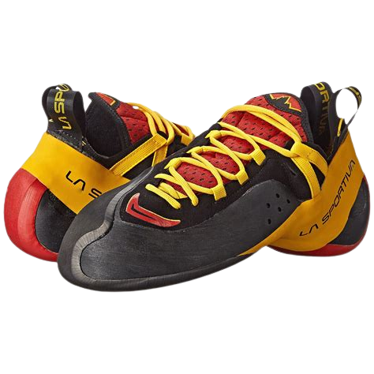
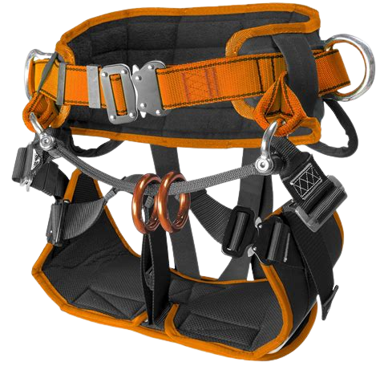
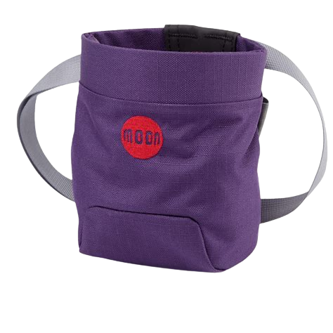
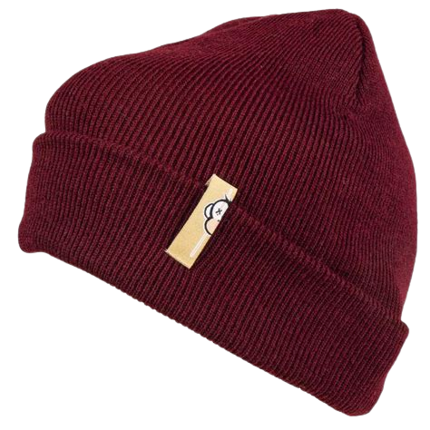

Time to spend your life savings!
Now that you have shoes you need to get the rest of the gear. This is the minimum you can buy to climb all the beginner sets.
Gear List:
Climbing Shoes
You should have alredy bought thease!
Harness
This will keep you from falling the entire route if you want to sport climb. This is only neccicary on the larger routes. For bouldering you can skip this piece of gear.
Chalk Bag
Chalk is like crack for climbers. Apply it to you hands and your instantly 20% better at climbing. It helps you get more friction on holds and will also keep your hands from getting sweaty. Never forget your chalk bag at home!
Beanie
Lastly the most important item on this list is the beanie. This is what differentiates the beginners from the elite climbers. If you want to truely fit in wear one of thease religiously in the gym.